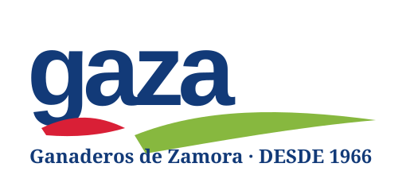

He convertido el concepto anterior en una simulación 3D mucho más visual y narrativa: granjas, carretera de entrada, tráfico perimetral, climatología, alertas, utilidades, muelles, staging, expediciones y camiones rotulados.
La experiencia está en español y pensada para que, al enseñarla, se entienda de un vistazo tu capacidad para plantear una capa de inteligencia operativa sobre un entorno industrial real.

WebGL interactivo: el campus se modela a partir de anclajes públicos de ubicación, escala, fotografías publicadas y sistemas documentados. La volumetría exterior es una reconstrucción inferida, no un as-built. La granja deja de representarse pegada al campus: la red de captación se mueve a una vista territorial <50 km. Este campus se concentra en acceso, recepción, proceso, ASRS de 9 niveles, staging, muelles, utilities y transporte.
La escena integra granjas, vial de entrada, tráfico exterior, planta, utilidades, almacén, staging, muelles y expediciones. La parte visual está pensada para resultar memorable al presentar tu candidatura.
Granja → recepción → proceso → almacén → staging → muelles → expediciones
Todo lo visible abajo está diseñado para comunicar criterio operativo y dominio de sistemas, sin confundir al observador sobre la frontera entre hecho público y modelo sintético.
| Capa | Contenido | Estado |
|---|---|---|
| Hechos públicos | 80+ ganaderías, Coreses, catálogo, GAZACONTROL, Lean | Confirmado |
| Escena 3D | Disposición general granjas-planta-muelles-carreteras | Simulada |
| Clima / DGT | Open-Meteo live + incidencias DGT por proximidad; impacto operacional heurístico | Live cuando disponible |
| Operación | Expediciones, pallets, slots, esperas, muelles | Simulada |
| Recomendación IA | What-if, explicación y aprobación humana | Conceptual |
| Flujo | Secuencia | Uso en demo |
|---|---|---|
| Inbound | Granja → cisterna → recepción → calidad | Visibilidad de entradas |
| Proceso | Silos → planta → envasado | Dependencias operativas |
| Almacén | Producto terminado → almacén → staging | Preparación de expediciones |
| Outbound | Muelle → camión → ruta | Expediciones y OTIF |
| Entorno | Acceso viario + tráfico + meteorología | Contexto operacional |
Esto refuerza la credibilidad de la demo: está visualmente ambiciosa, pero con trazabilidad explícita.